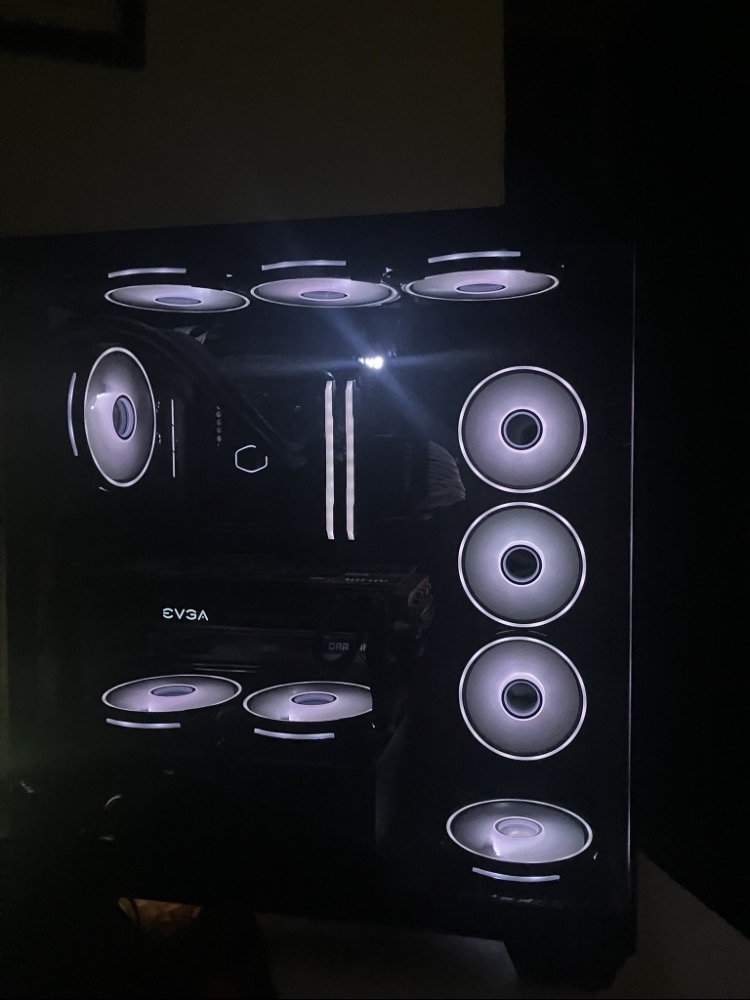
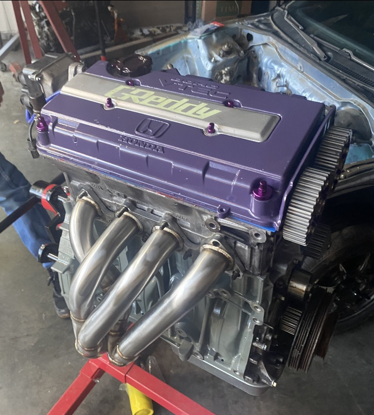

About
I care about how things look and how well they actually work. That is the thread through everything I do.
These days most of my work is photography and social media for local businesses. I shoot product photos, portraits, and landscapes, and I create the kind of steady content that keeps a business looking active and professional online.
Before the camera, I spent over fifteen years around computers. I build and repair them, set up networks, and figure out the problems other people give up on. I trained at Washburn Tech in computer repair and networking.
I have also spent years building and maintaining my own cars, mostly 1990s Hondas, and detailing them along the way. All of it comes back to the same thing: patience, attention to detail, and doing the job right the first time.


Also in my toolkit
A hands on technical background I bring to every project, and that I am always happy to help with.
Diagnostics, hardware repair, upgrades, and custom PC builds from the ground up.
Home and small business networks, wireless that reaches the whole place, and personal server setups.
Engine builds, repairs, and project work, with a soft spot for 90s Hondas.
Experience
Repairs, upgrades, builds, troubleshooting, software, and networking for myself, friends, family, and local clients.
Formal training that shaped how I approach diagnostics, repairs, and technical support.
Years of building, maintaining, and detailing my own cars, mostly 1990s Hondas.
Shooting and running content for local pages, helping them stay consistent and look professional.